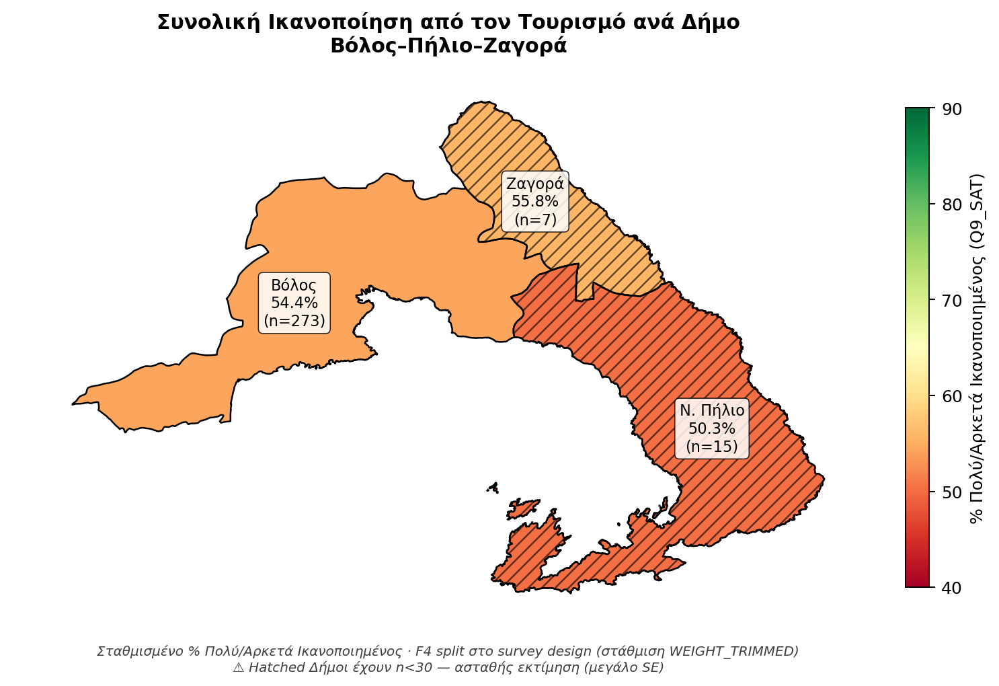
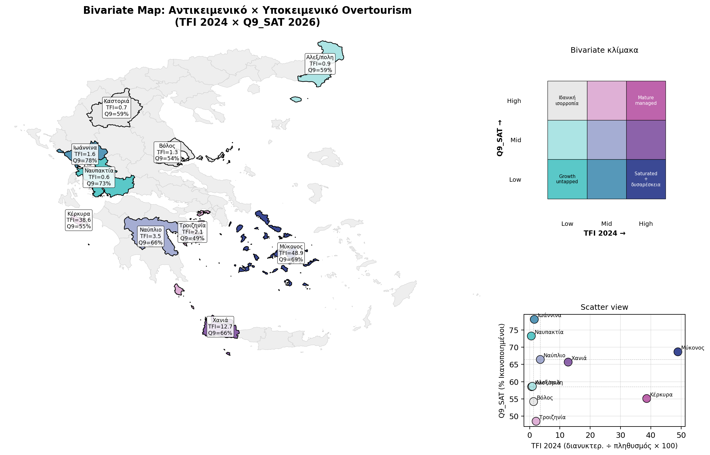
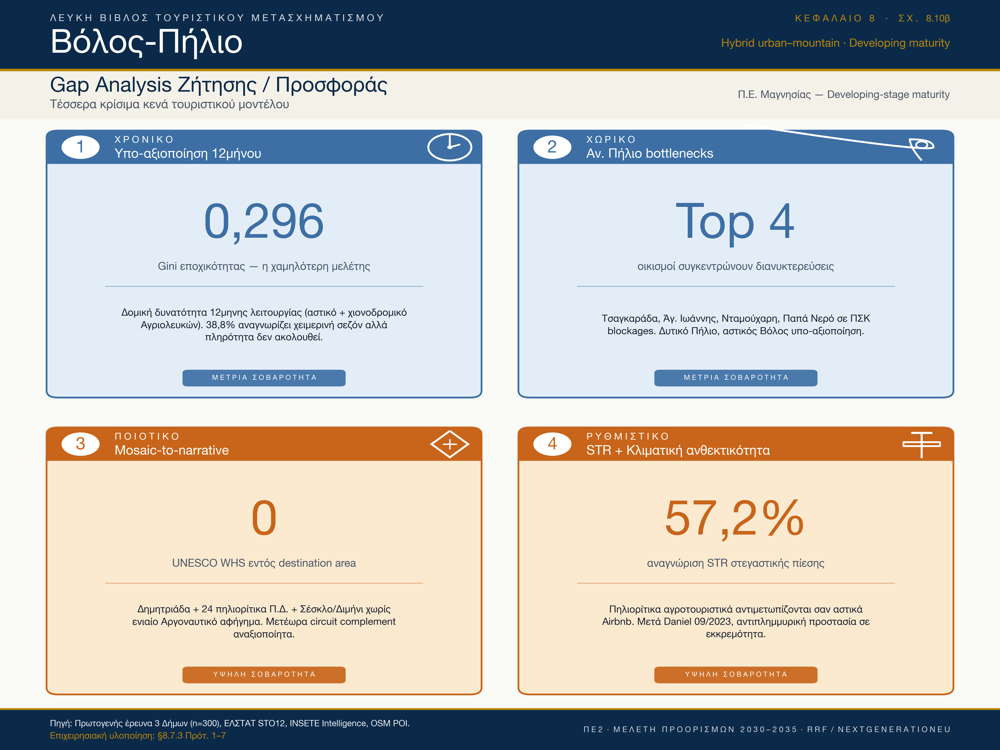

Σύνοψη Διοίκησης
Ο Βόλος-Πήλιο είναι ώριμος ηπειρωτικός προορισμός με ξεχωριστό χαρακτηριστικό: οι τουριστικά απασχολούμενοι κάτοικοι αντιλαμβάνονται λιγότερη πίεση από τους υπόλοιπους — αντιδιαισθητικά REVERSE πρότυπο +9,6 ποσοστιαίες μονάδες, αποτέλεσμα της εμπειρίας μετά το πέρασμα της κακοκαιρίας Daniel. Διαθέτει 3.941 km² σε προστατευόμενες περιοχές Natura 2000 — από τις μεγαλύτερες εκτάσεις της δεκάδας — και ισχυρή κοινωνική νομιμοποίηση (+26 σημεία ισορροπία κοινωνικής στάσης). Με 331.331 αφίξεις το 2024 (μόλις 20,6% αλλοδαποί), ο προορισμός έχει σημαντικό περιθώριο διεθνοποίησης. Στρατηγική προτεραιότητα: διεθνοποίηση, εμπλουτισμός φυσιολατρικού-γαστρονομικού προϊόντος Πηλίου, αύξηση αλλοδαπών αφίξεων.
Τι σημαίνει πρακτικά
Ο Βόλος-Πήλιο είναι ώριμος αλλά όχι κορεσμένος — έχει πραγματικό περιθώριο ποιοτικής ανάπτυξης. Δεν χρειάζεται περιορισμό· χρειάζεται προληπτική διαχείριση: διεθνοποίηση (μόλις 20,6% αλλοδαποί), αξιοποίηση της εμπειρίας μετά την κακοκαιρία Daniel, εμπλουτισμός φυσιολατρικού-γαστρονομικού προϊόντος Πηλίου, και ανάπτυξη με προληπτικές δικλείδες προστασίας πριν εμφανιστούν συμπτώματα κορεσμού.
Ενότητα 01
Επισκόπηση
Δεκαέξι δείκτες-κλειδιά που τοποθετούν τον Βόλο-Πήλιο σε διακριτή στρατηγική θέση «Ώριμος προορισμός με πραγματικό περιθώριο ποιοτικής ανάπτυξης»: ώριμος προορισμός με γνήσιο αναπτυξιακό περιθώριο, χαμηλή αντικειμενική τουριστική ένταση και μοναδικό έντονο αντίστροφο μοτίβο Insider Critique pattern.
Στρατηγική σύνοψη
Ώριμος προορισμός με γνήσιο αναπτυξιακό περιθώριο.
Ο Βόλος-Πήλιο αποτυπώνεται ως το πιο διακριτό παράδειγμα ηπειρωτικού μικτού προορισμού στο παραδοτέο: αστικό κέντρο 139.670 κατοίκων δίπλα σε ορεινή ζώνη Pelion με μέγιστο υψόμετρο 1.624 m. Συνδυάζει τέσσερις διακριτές τουριστικές περιόδους (χειμερινό σκι Αγριολευκών, ανοιξιάτικη πεζοπορία, καλοκαιρινός παράκτιος, φθινοπωρινός γαστρονομικός), εξαιρετική γαστρονομική ταυτότητα και αρχιτεκτονική κληρονομιά 24 πηλιορίτικων οικισμών Π.Δ.
Η αντικειμενική τουριστική ένταση TII = 3,96 (κλίμακα 3-Δήμων δειγματοληψίας, 152.506 κάτοικοι) τοποθετείται κάτω από το κατώφλι Saveriades 5, η χαμηλότερη μεταξύ ώριμων (Ναύπλιο 21,7· Χανιά 8,7· Κέρκυρα 26,3· Μύκονος 178,6). Η υποκειμενική πίεση POI θ̂ = −0,24 είναι επίσης η χαμηλότερη μεταξύ ώριμων, ενώ η κοινωνική αποδοχή με LCA C5+C2 = 61,9% συγκεντρώνει healthy-maturity δομή και μόνο 6,2% «Δυσφορούντες» (Αντιπαλότητα). Το 49,9% των κατοίκων προτιμά επιμήκυνση της τουριστικής περιόδου, έναντι μόλις 4,3% που ζητά μείωση.
Η Λευκή Βίβλος εντόπισε στον Βόλο-Πήλιο το ισχυρότερο εμπειρικό παράδειγμα Insider Critique pattern σε ολόκληρη τη μελέτη: οι τουριστικά εργαζόμενοι κάτοικοι αναγνωρίζουν περισσότερα προβλήματα από τους μη-εργαζόμενους σε 4 SIG REVERSE μετρικές με μέσο Δpp +9,60 ποσοστιαίες μονάδες — ισχυρότερο και από το βασικό D7 Ιωαννίνων. Αυτή η εργαλειακή στρώση αποτελεί early-warning signal που η αntάρτητη aggregate POI θ̂ κρύβει. Η στρατηγική κατεύθυνση είναι «ανάπτυξη με προληπτικές δικλείδες προστασίας».
Χωρική Ανάλυση
Χωρική απεικόνιση
Πού βρίσκεται ο προορισμός στον εθνικό χάρτη πίεσης-ικανοποίησης, και πώς κατανέμεται η σχέση κατοίκου-τουρισμού εντός του.
Σχήμα · Χωρική ανάλυση εντός προορισμού
Σταθμισμένη ικανοποίηση κατοίκων ανά Δήμο — Βόλος–Πήλιο–Ζαγορά

Σταθμισμένο % κατοίκων «Πολύ/Αρκετά Ικανοποιημένος» (Q9_SAT) ανά Δήμο Καλλικράτη, από την πρωτογενή έρευνα κατοίκων. Hatched Δήμοι έχουν δείγμα n<30 (ασταθής εκτίμηση).
Συγκριτικό · Αντικειμενική × Υποκειμενική πίεση
Θέση στον bivariate χάρτη TFI × Ικανοποίηση κατοίκων

Συνδυασμός αντικειμενικού δείκτη φέρουσας ικανότητας (TFI Defert 2024) και υποκειμενικής ικανοποίησης κατοίκων (Q9_SAT) σε ένα δι-διαστάσιμο choropleth. Τέσσερις διακριτές καταστάσεις προορισμού.
Ενότητα 02
Ζήτηση & Προσφορά
Δεκαπέντε έτη εξέλιξης ζήτησης (2010–2024), ξενοδοχειακό δυναμικό 9.074 κλινών σε ΠΕ Μαγνησίας, ταχέως ωριμάζουσα αγορά βραχυχρόνιας μίσθωσης στο 27,8% των διανυκτερεύσεων.
Σχήμα 8.1 · Αφίξεις 2010–2024
Εγχώρια κυριαρχία 79,4%, διεθνής επέκταση 2017-2024
Πηγή: ΕΛΣΤΑΤ STO12 T03 (αφίξεις σε ξενοδοχειακά καταλύματα). Μερίδιο αλλοδαπών 20,6% το 2024.
Σχήμα 8.2 · Δείκτης ανάκαμψης 2024/2019
Ανάκαμψη 0,99 — Storm Daniel resilience, μέση θέση μεταξύ 10
Σύγκριση 10 προορισμών. Λόγος ≥1 σημαίνει πλήρης ή ισχυρότερη ανάκαμψη.
Σχήμα 8.3 · Μηνιαία κατανομή 2024 (NUTS2 EL61)
Συγκέντρωση 4 μηνών αιχμής (Ιουν–Σεπ): 60,8% αφίξεων
Πορτοκαλί = αιχμή · σκούρο μπλε = ώμος · ανοιχτό μπλε = χαμηλή. ΕΛΣΤΑΤ STO12 T13 NUTS2 Θεσσαλίας.
Σχήμα 8.4 · Εποχικότητα: Συντελεστής Gini
Από 0,19 (2015-2019) σε 0,30 (2024) — post-COVID εντατικοποίηση
Gini=0 τέλεια κατανομή · Gini=1 πλήρης συγκέντρωση. Τιμές 0,20–0,30 = μέτρια εποχικότητα.
Σχήμα 8.6 · Ξενοδοχειακή δυναμικότητα 2015–2024
Κλίνες σταθερές ~9.000 — μονάδες −9% σε δεκαετία
ΕΛΣΤΑΤ STO12 T01 ΠΕ Μαγνησίας. Συγκράτηση δυναμικότητας — χωρίς εκρηκτική ανάπτυξη.
Σχήμα 8.5 · Δωμάτια ανά κατηγορία αστεριών (2024)
Mid-tier δομή — 5★ μόλις 4,9% (χαμηλότερο μεταξύ ώριμων)
Premium positioning σαφώς υπό-αντιπροσωπευμένο — Πρότ. 2 Premium Repositioning.
Σχήμα 8.7 · Μηνιαίο ποσοστό πληρότητας 2024
Αιχμή Αυγούστου 64% — Φεβρουάριος 16%, Δεκέμβριος 37% (χιονοδρομικό)
Περιφέρεια Θεσσαλίας (NUTS2). Αυξημένος Δεκέμβριος αντανακλά εορταστικό-χιονοδρομικό μοτίβο Πηλίου-Αγριολευκών.
Σχήμα 8.8 · Μέση διάρκεια παραμονής (ALoS)
2,43 διανυκτερεύσεις — η χαμηλότερη μεταξύ ώριμων (Κέρκυρα 4,89, Χανιά 4,12)
Σταθερή ανοδική τάση από 2,17 (2017-2019) σε 2,43 (2024). Πρότ. 2: στόχος 4,00 (2030).
Σχήμα 8.9 · Μερίδιο STR έναντι ξενοδοχείων (2020–2024)
Από 34,6% σε 18,5% διανυκτερεύσεις — εξορθολογισμός μετά την STR-αιχμή
Αφίξεις
Διανυκτερεύσεις
AirDNA / Inside Airbnb (booked listings). Εκκίνηση επανεξορθολογισμού 2024 — Insider δήλωση «πρόβλημα στέγης» +16,94 ποσοστιαίες μονάδες early warning για στεγαστική πίεση.
Ενότητα 03
Τουριστικό προϊόν
1.194 σημεία τουριστικού ενδιαφέροντος (438 εστίαση, 201 κατάλυμα, 148 φυσικά τοπία, 87 ιστορικά), αξιολόγηση 15 διακριτών υποδομών από κατοίκους — αξιοπρεπής βάση με 2 κρίσιμα κενά (τοπικό οδικό Πηλίου, τηλεπικοινωνίες).
Σχήμα 8.10 · Σημεία Τουριστικού Ενδιαφέροντος (POIs OSM)
1.194 POIs ΠΕ Μαγνησίας — 4η θέση των 10 προορισμών
OpenStreetMap Overpass API, εξαγωγή 2025. Κατηγορίες: 438 εστίαση, 201 κατάλυμα, 201 αναψυχή, 148 φυσικά τοπία, 117 αξιοθέατα, 87 ιστορικά μνημεία.
Σχήμα 8.11 · IPA Quadrant — Σπουδαιότητα × Αξιολόγηση υποδομών
Στάθμευση, τοπικό οδικό Πηλίου και τηλεπικοινωνίες στο τεταρτημόριο «Συγκέντρωση εδώ»
Random Forest importance × μέση αξιολόγηση κλίμακας 1–5. Πορτοκαλί = τουριστικές υποδομές, μπλε = δημόσιες. Πρωτογενής έρευνα Q5.
Σχήμα 8.10β · Gap Analysis: τέσσερα κρίσιμα κενά Ζήτησης / Προσφοράς, ΠΕ Μαγνησίας
Τρία αναπτυξιακά κενά + δύο προληπτικά

Σύνθεση δεικτών ΕΛΣΤΑΤ STO12, πρωτογενούς έρευνας κατοίκων (n=300), και POI overlay (OpenStreetMap 2025). Ίδια επεξεργασία.
Τρία αναπτυξιακά κενά + δύο προληπτικά (αναλυτική ταξινόμηση)
Κενό 01 · ALoS
2,43 → 4,00 (+64,6%)
Χαμηλότερη ALoS μεταξύ ώριμων — multi-day cultural packaging Argonautic Heritage Corridor.
Κενό 02 · 5★ Μερίδιο
4,9% → 12% (2030)
Ποιοτική αναβάθμιση φιλοξενίας — χωρίς ποσοτική επέκταση.
Κενό 03 · Διεθνής Πύλη
VOL Charter → Scheduled
Νέα Αγχίαλος bottleneck — 79,4% αφίξεων από οδική Αττική-Θεσσαλονίκη.
Κενό 04 · Τοπικό Οδικό Πηλίου
38,3% → 55% (2030)
Post-Daniel ζημιές ορεινών οδών — climate-resilient infrastructure sprint.
Κενό 05 · Τηλεπικοινωνίες
64,2% → 75% (2030)
Υστέρηση −10,1 μονάδες — υποστήριξη ψηφιακής φιλοξενίας, remote-work αγορών.
Κενό 06 · Στάθμευση POI
33,0% → 50% (2030)
Δύο στους τρεις κατοίκους χαρακτηρίζουν ανεπαρκή — περιφερειακοί χώροι + shuttle bus.
Σύνθεση δεικτών ΕΛΣΤΑΤ STO12, πρωτογενούς έρευνας κατοίκων, και POI overlay (OSM 2025).
Ενότητα 04
Οικονομία
Κύκλος εργασιών NACE I 1.098 ευρώ/κάτοικο — η χαμηλότερη απορρόφηση μεταξύ ώριμων (Ναύπλιο 1.694, Κέρκυρα 8.500, Μύκονος >30.000). Διαφοροποιημένη βάση με Πανεπιστήμιο Θεσσαλίας, ΟΛΒ ΑΕ, Α'+Β' ΒΙ.ΠΕ. Βόλου, αγροδιατροφή Πηλίου.
Σχήμα 8.12 · Εκτιμώμενος τζίρος καταλυμάτων
Ξενοδοχεία 68,4 εκ. € · STR 20,2 εκ. € (2024)
Εκτίμηση: hotel = διανυκτ. × €85 · STR = διανυκτ. × €110. Σύνολο 88,6 εκ. € κύκλος εργασιών καταλυμάτων.
Σχήμα 8.13 · ΑΠΑ G-I (Θεσσαλία NUTS2)
Ανάκαμψη +22% post-COVID (2020 → 2023)
ΕΛΣΤΑΤ National Accounts NUTS2 EL61. G-I = NACE κλάδοι Εμπόριο, Μεταφορές, Τουρισμός. Pro-rata Μαγνησίας ~31%.
Σχήμα 8.13β · Στρατηγικό τεταρτημόριο: Οικονομική εξάρτηση × Ικανοποίηση
«Διαφοροποιημένη / ικανοποιημένη» (31,4% × 3,58) — διακριτή από Κέρκυρα και Μύκονο
Πρωτογενής έρευνα κατοίκων (n_total ~3.000), σταθμισμένα ποσοστά Q15 και μέση δήλωση γενικής ικανοποίησης. Μετρίως διπλωμένη εξάρτηση σε υβριδική οικονομική βάση.
Σχήμα 8.14 · Νέες οικοδομικές άδειες & κατοικίες (2015–2025)
+82,4% σε 5 έτη — 279 άδειες 2024 (μέγιστο δεκαετίας)
ΕΛΣΤΑΤ SOP03 ΠΕ Μαγνησίας. Γκρι 2025 = προσωρινά. Quality-first permitting (Πρότ. 1) για ποιοτικό φιλτράρισμα.
Ενότητα 05
Κοινωνία
Φέρουσα ικανότητα κάτω από κατώφλι Saveriades 5, healthy-maturity LCA δομή με μόλις 6,2% «Δυσφορούντες» (Αντιπαλότητα), και — μοναδική στη μελέτη — έντονο αντίστροφο μοτίβο Insider Critique pattern με mean Δpp +9,60 ποσοστιαίες μονάδες.
Μεθοδολογικό κουτί 8.5.1.α — Γιατί χρησιμοποιούμε Defert TFI/TII
Ο γαλλικός γεωγράφος Pierre Defert (1967) εισήγαγε τον TFI ως πρώτη συστηματική ποσοτικοποίηση τουριστικής λειτουργίας: TFI = κλίνες/πληθυσμός × 100. Ο TII είναι μεταγενέστερη επέκταση: διανυκτερεύσεις/πληθυσμό × 100. Διεθνή κατώφλια ζώνης (Saveriades 2000, Coccossis & Mexa 2004): TII < 5 χαμηλή πίεση, 5–10 μέτρια, 10–15 υψηλή, >15 πολύ υψηλή. Ο Βόλος-Πήλιο: TII 3,96 (2024, 3-Δ βασικό) — κάτω από κάθε κατώφλι Saveriades. Συμβατή με στρατηγική developing-stage maturity με σημαντικό περιθώριο ανάπτυξης.
Σχήμα 8.15 · Δείκτης Τουριστικής Έντασης (TII) Defert 2010–2024
Από 1,63 σε 1,96 — η χαμηλότερη πορεία μεταξύ ώριμων προορισμών
Διανυκτερεύσεις / κάτοικο × 100. Όριο μέτριας πίεσης (Defert) στη γραμμή TII = 5. NUTS3 EL613 raw — 3-Δ βασικό = 3,96 (75% pro-rata).
Σχήμα 8.15γ · Στρατηγικό τεταρτημόριο: Αντικειμενική × Υποκειμενική πίεση
Βόλος-Πήλιο στο τεταρτημόριο «Λανθάνον δυναμικό» (TFI 5,95 · POI θ −0,24)
POI θ μέσω IRT-GRM. TFI σε log10 για visual ισοκατανομή.
Σχήμα 8.16γ · Στρατηγικό τεταρτημόριο: Στεγαστική πίεση από STR
Aggregate 24,4% κρύβει Insider δήλωση «πρόβλημα στέγης» ΕΡΓ 35,9% — early warning
Πρωτογενής έρευνα Q3_7 × δήλωση «πρόβλημα στέγης». Βόλος-Πήλιο στη ζώνη «Καμία πίεση» aggregate, αλλά Insider gap +16,94 ποσοστιαίες μονάδες (στατ. σημαντικό) REVERSE σημαίνει στεγαστική πίεση εκκίνησης.
Σχήμα 8.16 · Doxey Irridex Heatmap — 5 ώριμοι προορισμοί
Βόλος-Πήλιο με χαμηλότερη στεγαστική επίδραση, ανταγωνισμό, ευθύνη υποβάθμισης
Πρωτογενής έρευνα Q1 — μέσες τιμές κλίμακας 1–5. Πράσινο = θετικό, κόκκινο = αρνητικό. Doxey 1975 · Allen et al. 1988.
Μεθοδολογικό κουτί 8.6.3.α — μοτίβο κριτικής εκ των έσω (Doxey-Butler αντίστροφος σηματοδότης)
Η θεωρητική διάρθρωση Doxey (1975) προβλέπει ότι οι εργαζόμενοι στον τουριστικό κλάδο (insiders) παραμένουν θετικότεροι από τους μη-τουριστικά εξαρτώμενους κατοίκους (outsiders) διότι αντλούν άμεσο οικονομικό όφελος. Οι Faulkner & Tideswell (1997) και Sharpley (2014) επιβεβαίωσαν το CLASSIC pattern. Η σύγχρονη βιβλιογραφία (Andereck et al. 2005· Almeida-García et al. 2016) έχει αποτυπώσει σε «late-stage» ή «overheated» προορισμούς αντίστροφο πρότυπο (REVERSE) — μοτίβο κριτικής εκ των έσω. Στην παρούσα μεθοδολογία: ταξινόμηση με κατώφλι |Δpp| ≥ 10 σε σταθμισμένη υποομαδική σύγκριση ΕΡΓ (τουριστική απασχόληση κατοίκου=True, n=112, σταθμισμένο 31,4%) vs ΔΕΡ (n=188, σταθμισμένο 68,6%), Wald-F έλεγχος με DEFF≈2,0, σε 8 κανονικές μετρικές. Ο Βόλος-Πήλιο εμφανίζει το ισχυρότερο εμπειρικό παράδειγμα της μελέτης: mean Δpp = +9,60, n_sig REVERSE = 4, έντονο αντίστροφο μοτίβο — ισχυρότερο και από το βασικό D7 Ιωαννίνων. Policy-actionable: ετήσια επανάληψη με κρίσιμο όριο επιφυλακής mean Δpp > +12pp ή n_sig REVERSE ≥ 5.
Πίνακας 8.16β · Insider Critique 8-metric — έντονο αντίστροφο μοτίβο pattern
Mean Δpp +9,60 · 4 SIG REVERSE — ισχυρότερο εμπειρικό παράδειγμα της μελέτης
| Κωδ. | Μετρική | ΕΡΓ % | ΔΕΡ % | Δpp ΕΡΓ−ΔΕΡ | Σήμα |
|---|
Πρωτογενής ποσοτική έρευνα Απριλίου 2026 (N=300, n εργαζόμενοι τουρισμού=112, n μη-εργαζόμενοι=188, σταθμισμένο δείγμα (trimmed weights)). Κατώφλι |Δpp|≥10 για SIG-flag υπό συντηρητικό DEFF≈2,0.
Μεθοδολογικό κουτί 8.6.1.β — Γιατί χρησιμοποιούμε LCA
Η Latent Class Analysis (Lazarsfeld & Henry, 1968 · Hagenaars & McCutcheon, 2002) είναι model-based clustering που εντοπίζει υπόρρητες ομάδες σε κατηγορικά δεδομένα. Σε αντίθεση με τη Doxey που υποθέτει 4 στάδια εκ των προτέρων, η LCA επιτρέπει στα δεδομένα να αποκαλύψουν εμπειρικά distinct profiles. Εφαρμογή: poLCA της R με ML estimation, επιλογή 5 κλάσεων με BIC/AIC + interpretability. Στον Βόλο-Πήλιο: C5 «Ένθερμοι Υποστηρικτές» (Καθαρή Ευφορία) 32,5%, C2 «Ενεργοί Υποστηρικτές» (Ενεργή Ευφορία) 29,5%, C3 «Αδιάφοροι» (Ήπια Απάθεια) 18,9%, C4 «Αμφίθυμοι» (Συγκρουσιακή Ενόχληση) 13,0%, C1 «Δυσφορούντες» (Αντιπαλότητα) μόλις 6,2%. Συνδυασμένη θετική στάση (C2+C5) = 61,9% — healthy-maturity δομή, ισχυρότερη από Μύκονο και Κέρκυρα.
Σχήμα 8.17 · Latent Class Analysis — 10 προορισμοί
Βόλος-Πήλιο healthy-maturity: C2+C5 = 61,9% (3η θέση μεταξύ 10)
Σταθμισμένο μερίδιο πληθυσμού ανά εμπειρική class. Ταξινόμηση κατά δήλωση γενικής ικανοποίησης ικανοποίηση (αύξουσα).
Σχήμα 8.17β · Τεταρτημόριο πόλωσης: Class 1 × Class 5
Βόλος-Πήλιο στο τεταρτημόριο «Υγιής συναίνεση» (6,2% × 32,5%)
Χαμηλό C1 + υψηλό C5 = υγιής δομή. Βόλος-Πήλιο και Τροιζηνία-Μέθανα οι 2 πιο υγιείς θέσεις μεταξύ 10.
Ποιοτική έρευνα · 12 αυτούσια αποσπάσματα
Φωνές των στελεχών
Συγκριτική ανάγνωση
Insider Critique 5-Zone × 3-Direction Taxonomy
Η συστηματική τοποθέτηση του Βόλου-Πηλίου σε σχέση με τους υπόλοιπους 9 προορισμούς εκτίθεται στο Κεφάλαιο 13 § 13.4 της Λευκής Βίβλου. Ο Βόλος-Πήλιο τοποθετείται στη Ζώνη Δ Συστηματική (4 SIG REVERSE σε 8 μετρικές, mean Δpp +9,60) ως ισχυρότερο εμπειρικό παράδειγμα της μελέτης. Διαφοροποιείται από το βασικό D7 Ιωαννίνων (Ζώνη Γ, mean Δpp +5 έως +8) και αποτελεί ποιοτικά διακριτή στρατηγική θέση από τις υπόλοιπες 8 περιπτώσεις. Cross-destination dashboard: Παρ. Α § Α.9.
Ενότητα 06
Περιβάλλον
Natura 2000 ΠΕ Μαγνησίας 3.941 km² (9 περιοχές — η μεγαλύτερη έκταση των 10 προορισμών), δασικό μέτωπο Πηλίου με κίνδυνο πυρκαϊάς, post-Daniel κλιματική ευαλωτότητα. Climate-Resilient Sustainability ως Άξονας 4.
Eurostat lan_lcv_ovw · Χρήση γης Θεσσαλίας 2022
388 km² τεχνητή γη — 2,76% του συνόλου 14.037 km²
Land Use/Cover Area frame Survey (LUCAS), NUTS2 EL61. Δάση + θαμνώδης = 57% — υψηλό φυσικό κεφάλαιο.
Eurostat sdg_06_60 · Greek WEI+ 2003–2023
12,51 (2023) — μέτρια πίεση, σταθερή πορεία 11-13
4ετής μέσος όρος. Ζώνες: πράσινο <10 χαμηλή · κίτρινο 10-20 μέτρια · κόκκινο >20 έντονη. Storm Daniel πιθανώς αλλάζει water balance equation.
Σχήμα 8.18 · Αντίληψη αρνητικών επιπτώσεων (% συμφωνώ + απόλυτα)
Χαμηλότερες αντιλήψεις περιβαλλοντικής πίεσης μεταξύ 5 ώριμων
Πρωτογενής έρευνα Q3+Q7. Σύγκριση 5 ώριμων προορισμών. Aggregate χαμηλό — Insider δήλωση «απορρίμματα και λύματα» ΕΡΓ 56,03% έναντι ΔΕΡ 27,00% (+29,02 ποσοστιαίες μονάδες (στατ. σημαντικό) REVERSE ισχυρότερο).
Ενότητα 07
Στρατηγική
SWOT ανάλυση 40 εγγραφών (10 ανά τετάρτο), πέντε στρατηγικοί άξονες παρεμβάσεων ανάπτυξη με προληπτικές δικλείδες προστασίας, και οκτώ επιχειρησιακές προτάσεις πολιτικής βασισμένες στην πρωτογενή έρευνα κατοίκων.
SWOT Ανάλυση
Πέντε Στρατηγικοί Άξονες
Οκτώ Επιχειρησιακές Προτάσεις από την Πρωτογενή Έρευνα
Ενότητα 08
Δεδομένα & Παράρτημα
Πλήρης πρόσβαση στα 65 items της πρωτογενούς έρευνας, στους 21 πίνακες του κεφαλαίου, και στις 6 πηγές δευτερογενών δεδομένων.
Πρωτογενής έρευνα — Όλα τα 65 items
| Item | Μέσος (1–5) | % Συμφωνώ | n valid |
|---|
4 Μεθοδολογικά Κουτιά
Πηγές δεδομένων
Πηγαίες παρουσιάσεις πρωτογενούς έρευνας
Οι αυτούσιες παρουσιάσεις του φορέα δημοσκοπικής έρευνας με τα πλήρη ευρήματα ποσοτικής και ποιοτικής έρευνας στους κατοίκους και στα στελέχη του προορισμού. Διαθέσιμες ως PDF για μεταφόρτωση.
PDF · Ποσοτική έρευνα
Έκθεση Αποτελεσμάτων Πρωτογενούς Ποσοτικής Έρευνας
Δ. Βόλου · Δ. Ζαγοράς-Μουρεσίου · Δ. Νοτίου Πηλίου · Απρίλιος 2026
n=300 · Σταθμισμένο
PDF · Ποιοτική έρευνα
Έκθεση Αποτελεσμάτων Ποιοτικής Έρευνας σε Στελέχη
Συνεντεύξεις σε στελέχη του προορισμού · Απρίλιος 2026
Slides 87 (MUST HAVE) και 82 (Πήλιο maturity)